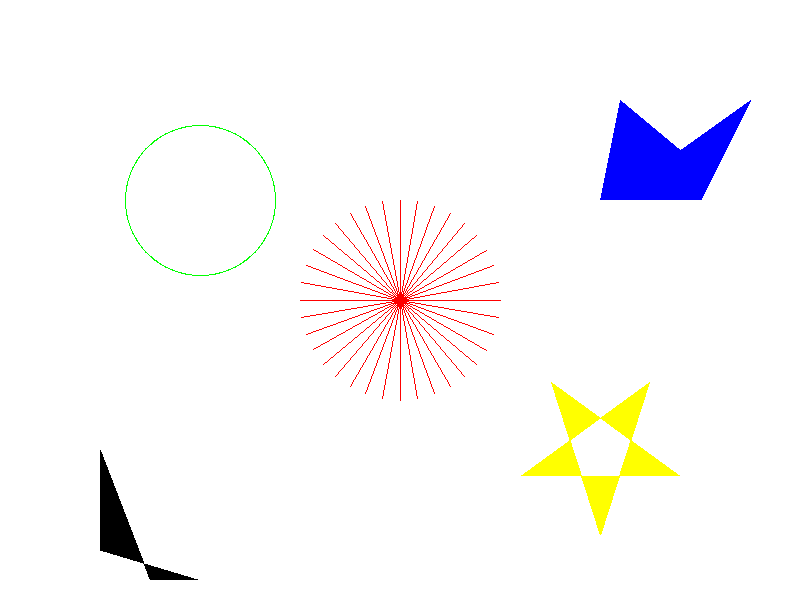

光栅图形学作业
实现的功能
- 绘制线段
- 绘制圆
- 多边形区域填充
- 简单的反走样
结果图
不开启反走样：

开启反走样：

算法说明
绘制线段
对于线段(点A<->B点)的绘制，枚举A的横坐标和B的横坐标之间的每一个值，根据比例计算出该横坐标下对应的纵坐标值（四舍五入），该点即位于A与B的连线上，需要被绘制。
同时，为了避免A的横坐标和B的横坐标相差太小带来的失真，对A的纵坐标和B的纵坐标之间的每一个值也要用类似的方式处理一遍。
最终被绘制的点是上面两次计算出点的并集。
绘制圆
给定需要绘制的圆的半径，可计算出该圆的周长，则可用个点对圆进行近似；将这些点按照角度平均分配到圆周上，通过三角函数计算出他们的近似位置（四舍五入），对计算出的点进行绘制，即可得到圆。
绘制多边形
给定需要绘制的多边形的点序列，计算出这些点的和，然后对在这之间的每个，均计算出有哪些点和多边形相交，将这些点按照排序，相邻的两个点构成一组，则在这两个点之间的每个点均需要被绘制。
反走样
对于上面的三种绘制情况，记录下被绘制的所有点，然后计算出其临近的点；对于这些临近的点，通过统计他的颜色和他周围的颜色，按照加权平均的算法，得出临近点的新颜色。
主要代码说明
Image类
Image类负责读取/写入图片，以及提供对图片像素级的操作。
Image类的读取和写入图片都是调用libpng的相关函数实现，本身记录了图片的类型和每个像素的RGB值，提供对外访问和修改像素的接口。
主要接口如下：
/// 处理图片相关的功能，不包括绘图
class Image
{
public:
enum ColorType{RGB, RGBA};
typedef std::shared_ptr<Image> ptr;
// some static functions
Image(int height, int width);
~Image();
void save(const std::string& filename);
int height();
int width();
ColorType type();
/// x: [0:h-1]; y: [0:w-1]
Pixel* getPixel(int x, int y);
void setPixel(int x, int y, Pixel pixel);
// ... other functions
};Panel类
Panel类表示画板，所有的绘制过程均调用Panel的相关函数实现；每个Panel对象会维护一个Image对象，所有的绘制过程，最终都会落在该Image对象上。
Panel类的主要接口如下：
// 二维世界，坐标和图片无关
class Panel
{
// 抗锯齿的范围
const static int AA_RANGE = 4;
const static int AA_CENTER_W = 3;
public:
/// 高度，宽度，是否反走样
Panel(int height, int width, bool AA = false);
~Panel();
/// 画线
void drawLine(int x1, int y1, int x2, int y2, Pixel pixel);
/// 画圆
void drawCircle(int x, int y, int r, Pixel pixel);
/// 画多边形
void drawPolygon(std::vector<Pointi> points, Pixel pixel);
void save(const std::string& filename);
};几何相关
由于代码中需要大量运用到和几何处理相关的函数，所以我在设计的时候，将几何公共的部分提取出来，放在geometry.h和geometry.cpp中，方便其他代码调用。
外部依赖
libpng：读取和写入png图片plog:输出Log